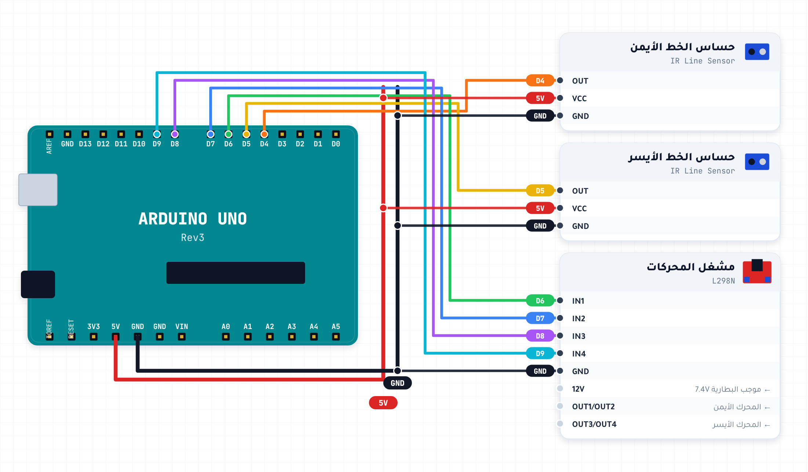
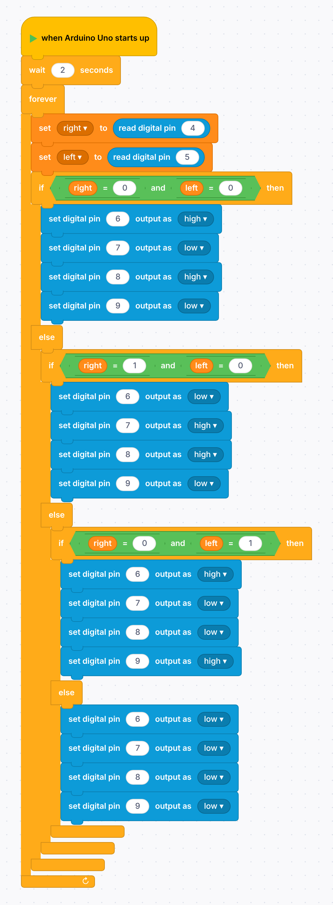

▶فيديو الشرح
روبوت بعجلات يتبع خطاً أسود على أرضية بيضاء باستعمال حساسين للأشعة تحت الحمراء.
1المكونات
ARDUINO UNOboardحساس الخط الأيمنIR Line Sensorحساس الخط الأيسرIR Line Sensorمشغل المحركاتL298Nأسلاك توصيلJumper Wiresلوحة تجاربBreadboard
2مخطط التوصيل

اضغط على المخطط لتكبيره · نسخة SVG عالية الدقة
| القطعة | الطرف | يوصل إلى |
|---|---|---|
| حساس الخط الأيمن | OUT | D4 |
| حساس الخط الأيمن | VCC | 5V |
| حساس الخط الأيمن | GND | GND |
| حساس الخط الأيسر | OUT | D5 |
| حساس الخط الأيسر | VCC | 5V |
| حساس الخط الأيسر | GND | GND |
| مشغل المحركات | IN1 | D6 |
| مشغل المحركات | IN2 | D7 |
| مشغل المحركات | IN3 | D8 |
| مشغل المحركات | IN4 | D9 |
| مشغل المحركات | GND | GND |
| مشغل المحركات | 12V | موجب البطارية 7.4V |
| مشغل المحركات | OUT1/OUT2 | المحرك الأيمن |
| مشغل المحركات | OUT3/OUT4 | المحرك الأيسر |
3الكود
لا يحتاج هذا المشروع إلى أي مكتبة إضافية.
/* المستوى المتوسط — المشروع 2: سيارة تتبع الخط (Line Follower) كتاب: 38 مشروع في شهر — لؤي النصري (@robotlouay) التوصيل: حساس الخط الأيمن OUT → Pin 4 حساس الخط الأيسر OUT → Pin 5 VCC الحساسين → 5V ، GND → GND L298N: IN1 → Pin 6 IN2 → Pin 7 IN3 → Pin 8 IN4 → Pin 9 OUT1/OUT2 → المحرك الأيمن OUT3/OUT4 → المحرك الأيسر 12V ← موجب البطارية (7.4V) GND ← سالب البطارية + GND الأردوينو 5V (من L298N) → VIN في الأردوينو (اختياري لتغذية اللوحة) ENA و ENB: اترك الجمبر في مكانه (سرعة كاملة) أغلب الحساسات تعطي HIGH فوق الأسود و LOW فوق الأبيض. إن كان حساسك معكوساً غيّر BLACK. */ const int RIGHT_SENSOR = 4; const int LEFT_SENSOR = 5; const int IN1 = 6, IN2 = 7; // المحرك الأيمن const int IN3 = 8, IN4 = 9; // المحرك الأيسر const int BLACK = HIGH; void motors(int r, int l) { // 1 = للأمام ، -1 = للخلف ، 0 = توقف digitalWrite(IN1, r == 1); digitalWrite(IN2, r == -1); digitalWrite(IN3, l == 1); digitalWrite(IN4, l == -1); } void setup() { pinMode(RIGHT_SENSOR, INPUT); pinMode(LEFT_SENSOR, INPUT); pinMode(IN1, OUTPUT); pinMode(IN2, OUTPUT); pinMode(IN3, OUTPUT); pinMode(IN4, OUTPUT); delay(2000); // وقت لوضع الروبوت على المسار } void loop() { bool rightOnBlack = digitalRead(RIGHT_SENSOR) == BLACK; bool leftOnBlack = digitalRead(LEFT_SENSOR) == BLACK; if (!rightOnBlack && !leftOnBlack) motors(1, 1); // الخط بين الحساسين → للأمام else if (rightOnBlack && !leftOnBlack) motors(-1, 1); // الخط على اليمين → انعطف يميناً else if (!rightOnBlack && leftOnBlack) motors(1, -1); // الخط على اليسار → انعطف يساراً else motors(0, 0); // تقاطع أو نهاية المسار → توقف }
🧩 mBlock 5: اختر الجهاز Arduino Uno ثم وضع Upload، وأنشئ المتغيرات المستعملة من فئة Variables.
نفس منطق كود Arduino IDE مكتوباً بالبلوكات.
نفس منطق كود Arduino IDE مكتوباً بالبلوكات.


4كيف يعمل؟
- كل حساس يعطي HIGH فوق الأسود
- الحساسان على الأبيض → للأمام
- الأيمن على الأسود → انعطاف يميناً
- الأيسر على الأسود → انعطاف يساراً
⚠ قبل توصيل الكهرباء: راجع كل سلك مع الجدول أعلاه، وتأكد من عدم وجود تماس بين 5V و GND. اختر اللوحة والمنفذ الصحيحين من قائمة Tools في Arduino IDE.